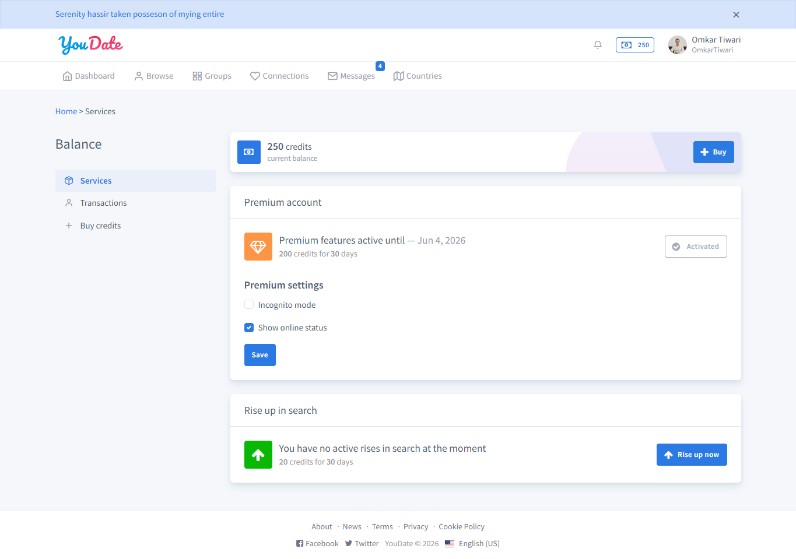
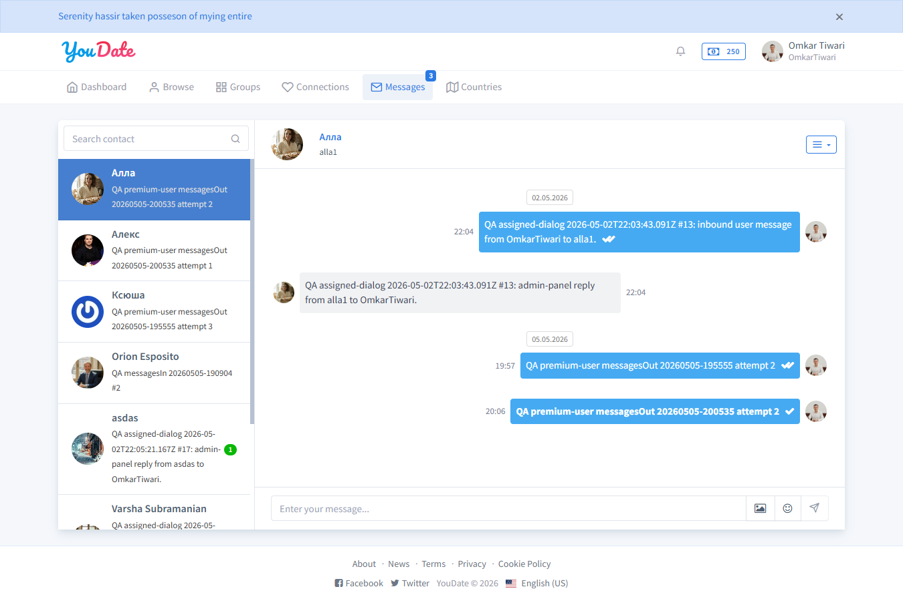
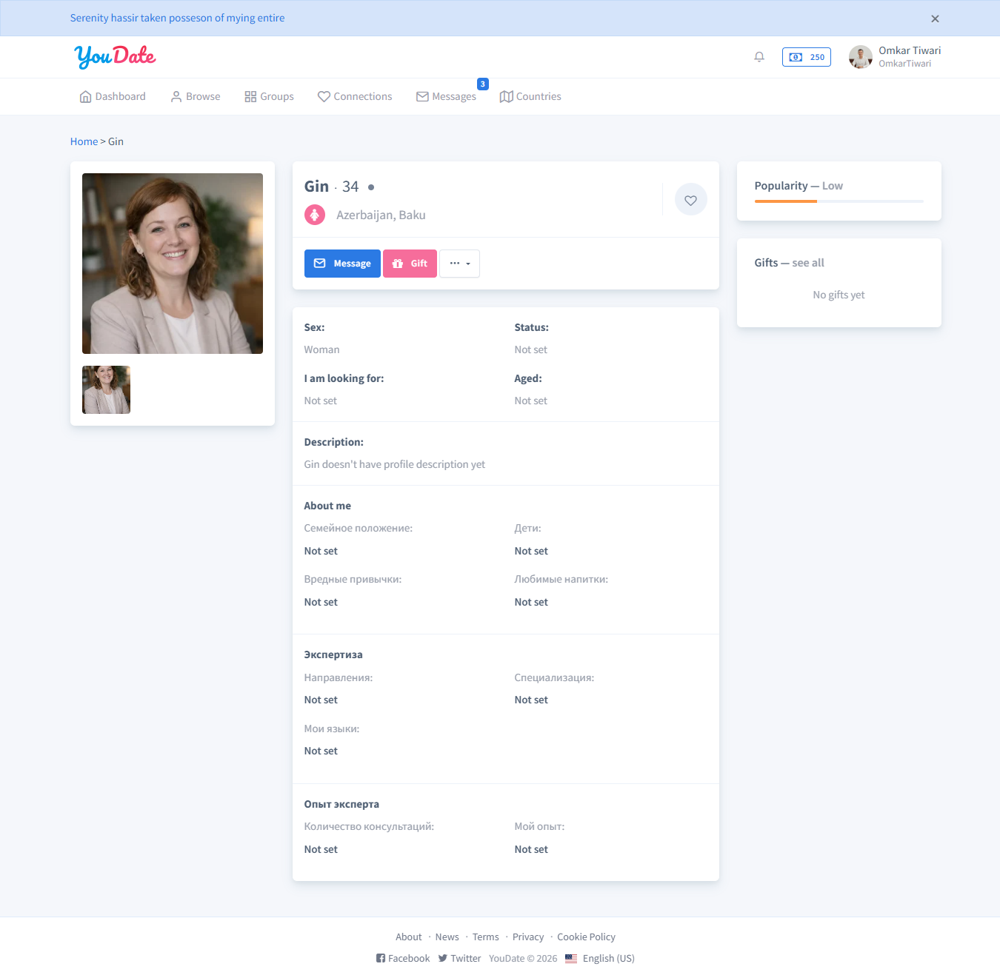
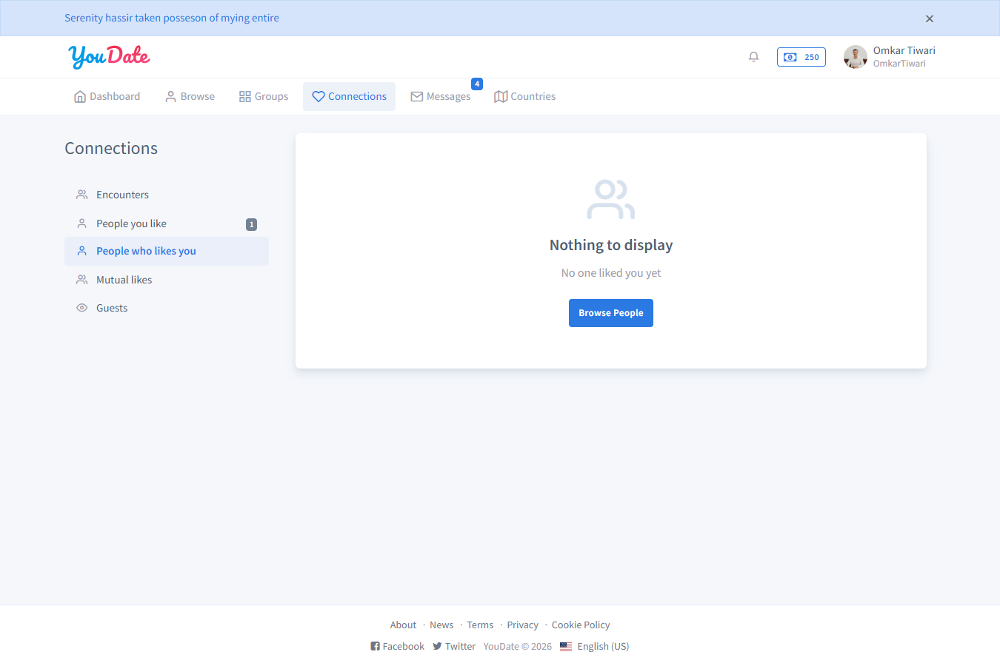
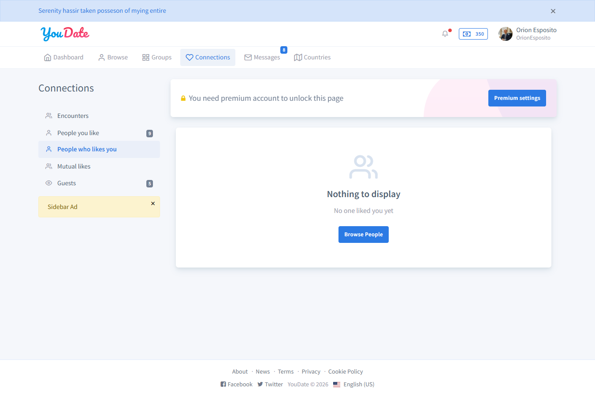
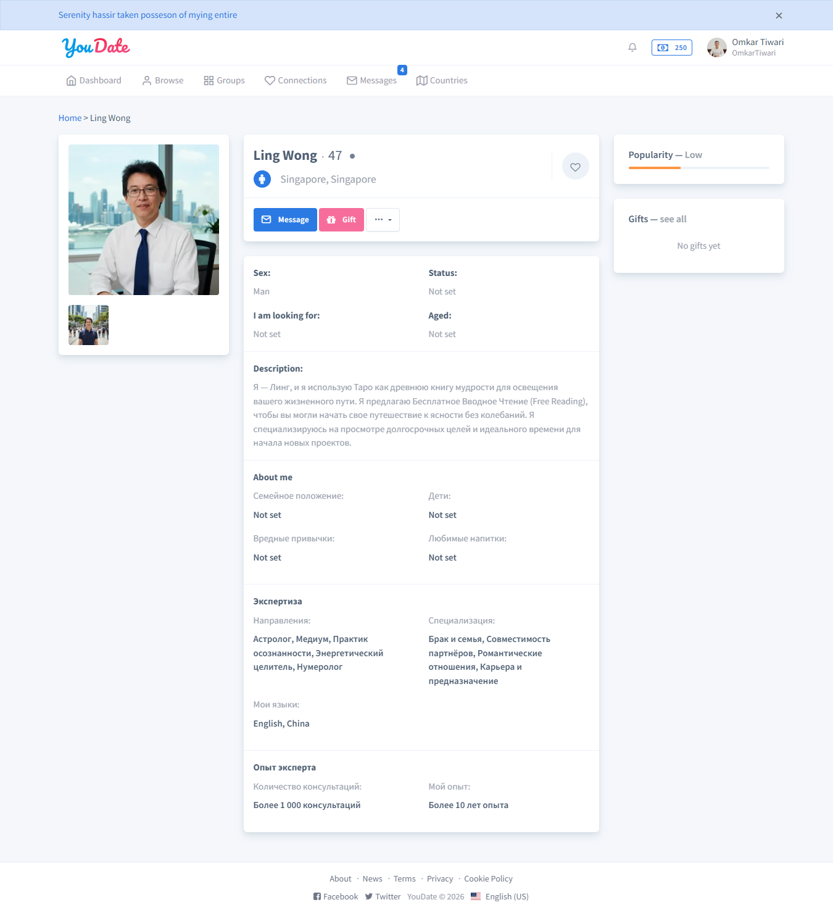
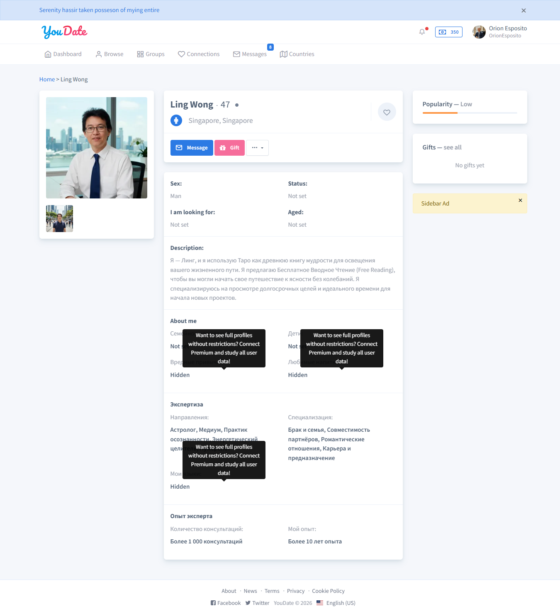

QA report · live Confideline
Premium / Free Settings: полный отчет тестирования
Проверка настроек premium/free на live test-сайте Confideline: активация premium test user, снижение лимитов до единиц, сравнение premium и free поведения, фиксация дефектов для Игоря и rollback admin settings.
Критичный факт: premium user 182 / Omkar Tiwari активирован до Jun 4, 2026, баланс после активации 250 credits. Free control user: 184 / Orion Esposito. Admin premium settings после теста восстановлены, diff пустой.
Сводка для Игоря
| Приоритет | Блок | Факт | Ожидание | Куда смотреть |
|---|---|---|---|---|
| P0 | messagesOutFree* и messagesOutPremium* |
Лимиты исходящих сообщений не применяются. Free user ранее отправил 3 сообщения при limit=1; premium user 182 тоже отправил 3 сообщения подряд, все success=true. |
После первого разрешенного действия второе/третье сообщение должно блокироваться или возвращать action-specific limit response. | /en/messages/create, MessagesController::actionCreate(), MessageManager::createMessage(), premium/free limit event chain. |
| P1 | profileViewPremium* |
При premium limit=1 user 182 открыл два профиля: LingWong и Gin001, блокировки не было. |
Второй профиль должен блокироваться или показывать limit modal для premium лимита. | Profile view route, счетчик просмотров, premium profile-view limit tracking. |
| P2 | profileLikePremium* |
Лимит сработал, но premium user получил текст/modal Get Premium / You have exceeded the limit. |
Для premium user нужен текст про исчерпанный premium limit, не upsell на premium. | Premium limit copy/messages for encounter like. |
| P2 | swipeBackOn |
Не доказано: у premium click не сработал в текущем carousel state, у free previous сработал без premium CTA. | Premium должен возвращаться назад, free должен видеть premium gate/CTA, если опция включена. | Encounters carousel, Angular prev(), premium gate. |
Матрица проверок
| Опция | Status | Premium result | Free result | Комментарий |
|---|---|---|---|---|
sitePremiumIncomingLikes |
PASS | Premium видит страницу входящих лайков. | Free получает lock: “You need premium account to unlock this page”. | Рабочая premium/free развилка. |
extendedSearch* |
PASS | premiumOnlyCount=0. |
premiumOnlyCount=8. |
Технически разделение есть; точная семантика toggles требует продуктовой фиксации. |
noAdsOn |
PASS | Sidebar ad отсутствует. | Sidebar ad виден. | Работает. |
addToFavoriteOn |
PASS | Favorite action проходит. | Response содержит premium CTA: “Only Premium can mark profiles as favorites...”. | Raw success=true, но payload явно premium-gated. |
profileLikePremium* |
PASS + UX BUG | Premium limit сработал. | Free limit ранее также срабатывал. | Нужно заменить copy для premium user. |
messagesOutPremium* |
FAIL | 3 сообщения подряд, все success=true. | Free ветка ранее дала такой же FAIL. | Общий backend defect outgoing messages. |
profileViewPremium* |
FAIL | Второй профиль открылся без блока. | Free ветка ранее блокировалась корректно. | Похоже на дефект именно premium ветки tracking/limit. |
swipeBackOn |
NOT PROVEN | Click не сработал в текущем состоянии. | Free previous сработал без premium CTA. | Нужен отдельный узкий тест carousel state. |
Evidence screenshots








Правило публикации следующих QA-задач
Каждая новая задача тестирования должна публиковаться как отдельная страница в /web/qa-reports/<slug>/, добавляться в каталог /web/qa-reports/ и проходить public check перед передачей программисту. Минимальный состав: verdict, scope, checks table, defects for Igor, screenshots, rollback/state notes, public URL.